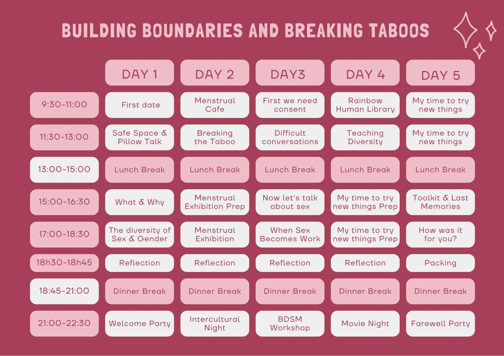
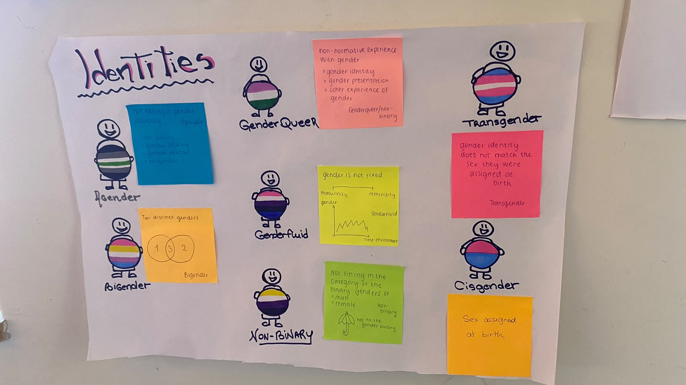
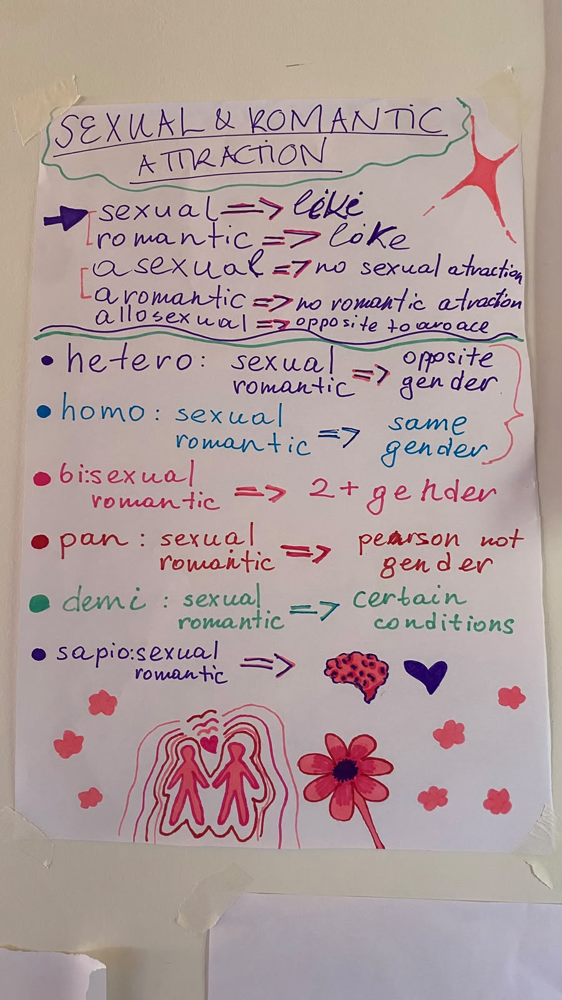
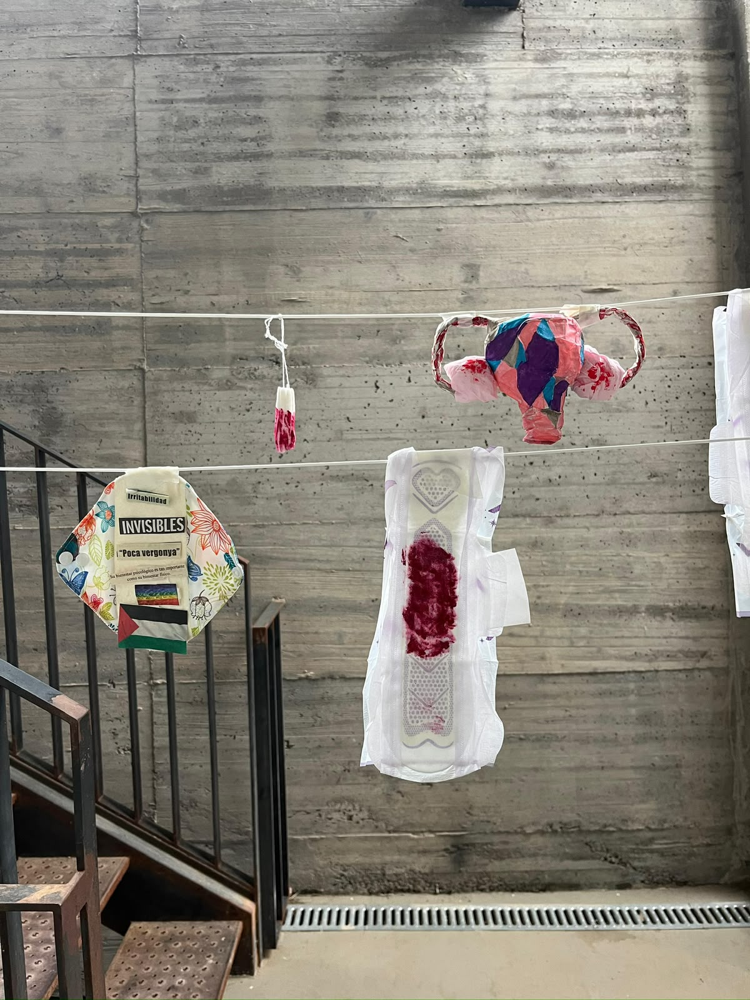
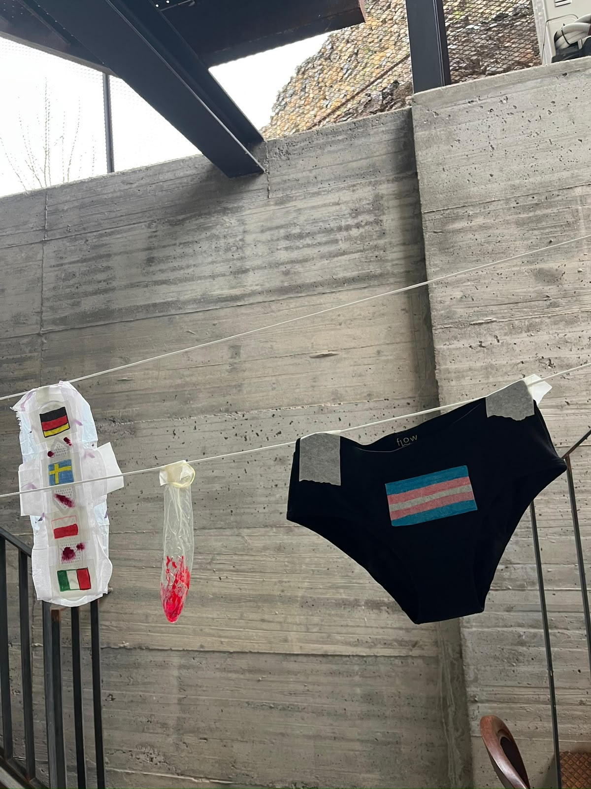
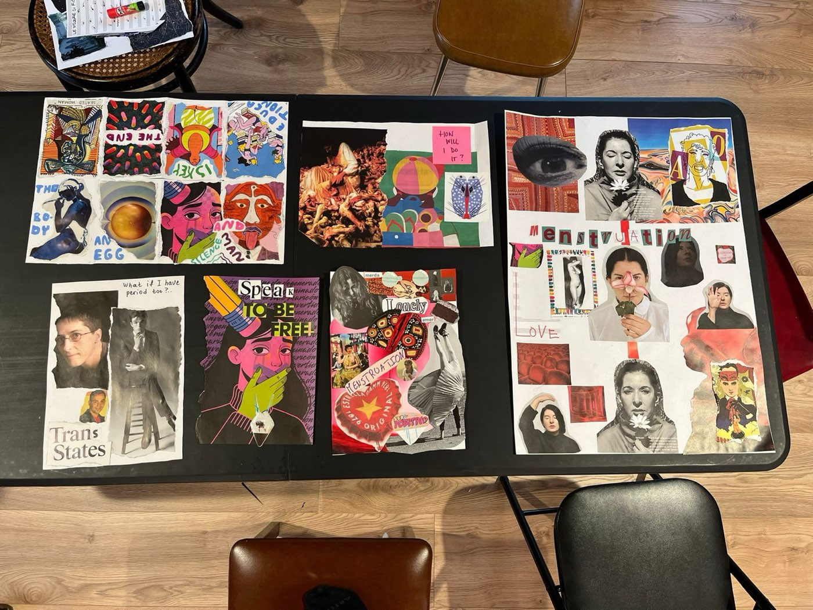

Formações para youth workers e jovens
Formações em Educação Sexual
Para youth workers, educadores e jovens que querem levar estas conversas mais longe.
Planeio e facilito formações com métodos não formais e participativos, em português ou em inglês, para grupos nacionais e internacionais.

Exemplo
Building Boundaries and Breaking Taboos
Planeei e facilitei um curso de formação de 5 dias sobre educação sexual para 17 participantes de 8 países, e criei um toolkit para levarem os métodos para casa.
O toolkit reúne os quatro workshops que os participantes criaram e testaram, com guias passo a passo para youth workers. É de uso livre, com licença Creative Commons.






Testemunhos
O que dizem participantes e parceiros
Criaram um espaço seguro para nos expressarmos. (…) Gostei muito da energia da equipa de formação e as atividades planeadas foram bem pensadas e diversificadas. Tiveram tempo para ouvir e validar a opinião de todas as pessoas, sem julgamentos.
Uma das melhores partes do curso de formação foi, sem dúvida, a equipa de formação. Foram prestáveis, empenhadas, perspicazes e estiveram sempre lá para nós. Entre jogos, conversas e gargalhadas, aprendi mesmo sobre educação sexual. Obrigada!
Conheço a Mariana há cerca de 7 anos e nestes últimos anos tenho tido o prazer de trabalhar em alguns projetos em parceria com ela e só tenho o melhor a dizer. A Mariana é uma pessoa muito querida, consciente, empática e que procura estar sempre melhor informada e educada para poder melhor apoiar a sua comunidade. É muito competente no que faz, tem um sentido crítico bem apurado e traz sempre contributos muito positivos para os projetos em que participa. Uma das coisas que mais admiro na Mariana é o seu espírito de lutadora, de defensora do que ela considera certo, de estar um passo à frente no apoio e defesa dos direitos humanos e de minorias, mantendo sempre o seu lado empático, racional e conseguindo falar do que é importante sem queimar pontes! Acima de tudo a Mariana é uma pessoa muito amável e divertida que faz com que todos se sintam realmente seguros na sua presença, algo que nos dias que correm é fundamental!
Perguntas frequentes
Sobre as formações
Para quem são as formações?
Para youth workers, educadores e jovens, em grupos nacionais ou internacionais. Adapto o programa ao grupo e aos objetivos do projeto.
Em que língua?
Em português ou em inglês.
O toolkit é gratuito?
Sim. É de uso livre, com licença Creative Commons, e podes descarregá-lo nesta página.
Como te posso convidar para um projeto?
Escreve-me pelo formulário abaixo ou por email, com a ideia do projeto, o grupo e as datas.
Contacto
Tens um projeto em mente?
Com o apoio de